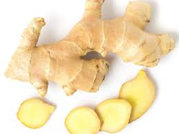

Blackcurrant

As well as high levels of Vitamin C and other antioxidants, blackcurrants contain soluble and insoluble fibre as well as important carbohydrates to give you energy. Soluble fibre helps to slow down the release of nutrients, particularly glucose, into the blood stream, which is healthier for the body. Find yourself slumping at your desk mid-afternoon? Try swapping your energy drink for a fruity blackcurrant tea. Rich in anti-oxidants, research has shown that blackcurrant extract can help people stay more alert, reduce mental fatigue and even work with greater accuracy while under significant mental stress.Black currant doesn't only tastes great, it may offer many great health benefits such as regulating blood pressure, increasing fat oxidation and promoting skin health.A black currant is a diminutive fruit that packs a big nutritional punch in a small package. Each dried berry in Tea Forté’s black currant tea blends contains a dose of antioxidants believed to reduce cancer-causing free radicals in the human body. A cup of tea made with this vibrant ingredient delivers a generous serving of vitamin C that may stave off colds and infections. Black currant also provides a serving of blood-building iron, as well as plenty of eye-protective vitamin A and gamma-linolenic acid (GLA), which may boost the effectiveness of the human immune system.Blackcurrants crop best in a sunny location but will also do well in light shade. Blackcurrants are easy to grow, producing a delicious summer harvest with little upkeep required.
Elderflower
An extract of the flower is used to make medicine. Elderflower is used for swollen sinuses (sinusitis), colds, influenza (flu), swine flu, bronchitis, diabetes, and constipation. It is also used to increase urine production (as a diuretic), to increase sweating (as a diaphoretic), and to stop bleeding. It is thought to be helpful for cooling down a fever, increasing circulation, and boosting the immune system with vitamin C and antioxidants. The berries and flowers of elderberry are packed with antioxidants and vitamins that may boost your immune system. They could help tame inflammation, lessen stress, and help protect your heart, too. Some experts recommend elderberry to help prevent and ease cold and flu symptoms. Depending upon where you live, elderflowers are at their peak in late spring to early summer. In most regions, mid-June seems to be the best time for picking. If left to their own devices, the flowers will turn into delicious, dark purple berries around August, which must be cooked to remove cyanidin glycoside.
Ginger
It's known for adding flavor to cooking recipes, but it also offers several health benefits. Numerous studies have found that ginger can help improve blood sugar levels, reduce inflammation, relieve pain, strengthen the immune system, and treat nausea and indigestion. Brewing a cup of hot ginger tea is also effective when you are suffering from fever. To make the tea, add half-teaspoon minced ginger root in 1 cup of boiled water. Strain it and then drink. Ginger has been shown to be a safe, natural, and effective way of reducing nausea for many people. Before using ginger for medicinal purposes however, talk to your doctor. Common side effects of ginger may include: Mild heartburn. A cup of ginger tea can help to increase concentration and focus and increase energy. While ginger has been used to boost brainpower in herbal medicine for hundreds of years, recent studies have shown that ginger's cognitive benefits are backed by scientific evidence.
Icelandic moss

Iceland moss is used for treating irritation of the mouth and throat, loss of appetite, common cold, dry cough, bronchitis, indigestion, fevers, lung disease, kidney and bladder complaints, and the tendency toward infection. Even though mosses are known for thriving in harsh environments, they still need a lot of water, above-zero temperatures and sunlight in order to grow and expand. If it's too cold or too dry, they stay dormant and wait for better living conditions.
meadowsweet

Meadowsweet is used for colds, bronchitis, upset stomach, heartburn, peptic ulcer disease, and joint disorders including gout. It is also used to increase urine output and kill germs in the urine of people with bladder infections. It has antispasmodic and calming properties. This beautiful plant can help relieve menstrual cramps and period pain. It can also be used to relieve anxiety and promote sleep. Who should not take meadowsweet? Pregnancy: It is likely unsafe to use meadowsweet while pregnant. It might make the uterus contract, causing a miscarriage. Breast-feeding: There isn't enough reliable information to know if meadowsweet is safe to use when breast-feeding. Stay on the safe side and avoid use. Most herbalists recommend that if you're new to meadowsweet that you begin by drinking small amounts of tea made with this herb. The most common way to use the dried flowers and fresh roots for their medicinal properties is to make herbal meadowsweet tea. If you want to grow it in your own garden, all you need is a spot in full sun with rich, moist soil. End of June and July are the busiest harvesting times for a medicinal herb farmer.
lindenflower

Linden flowers are sometimes suggested to treat colds, cough, fever, infections, inflammation, high blood pressure, headache (particularly migraine); as a diuretic (increases urine production), antispasmodic (reduces smooth muscle spasm along the digestive tract), and sedative.Linden is a common name for trees belonging to the Tilia genus. The dried flower, leaves, and wood are used for medicine. People use linden for conditions such as colds, headache, trouble sleeping (insomnia), itchy skin, and many others, but there is no good scientific evidence to support these uses.Linden trees typically bloom between June and July and once they are in full bloom, it is best to harvest the flowers within the first 4 days. Remember that the large-leaved linden flowers a little earlier than the small-leaved linden does.